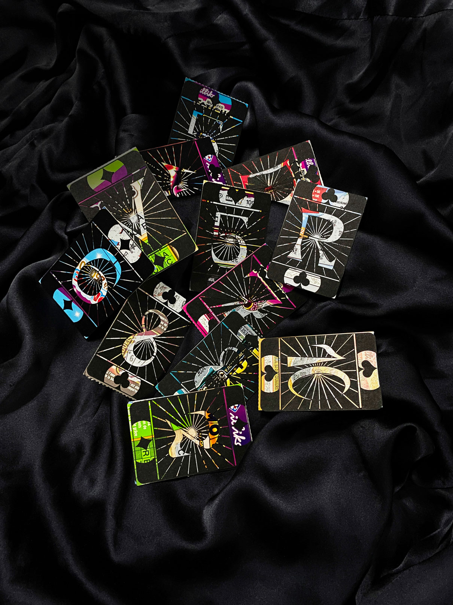
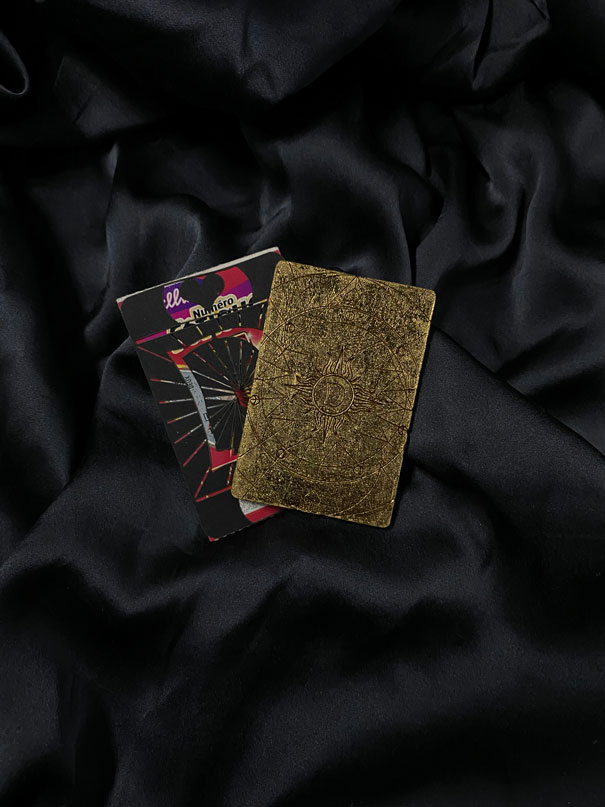
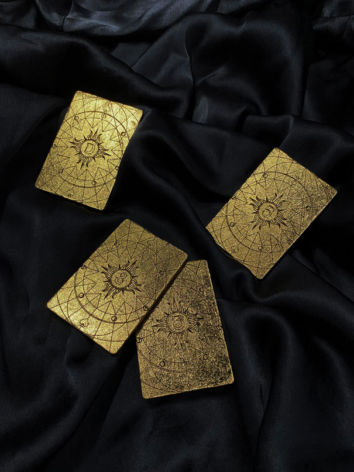
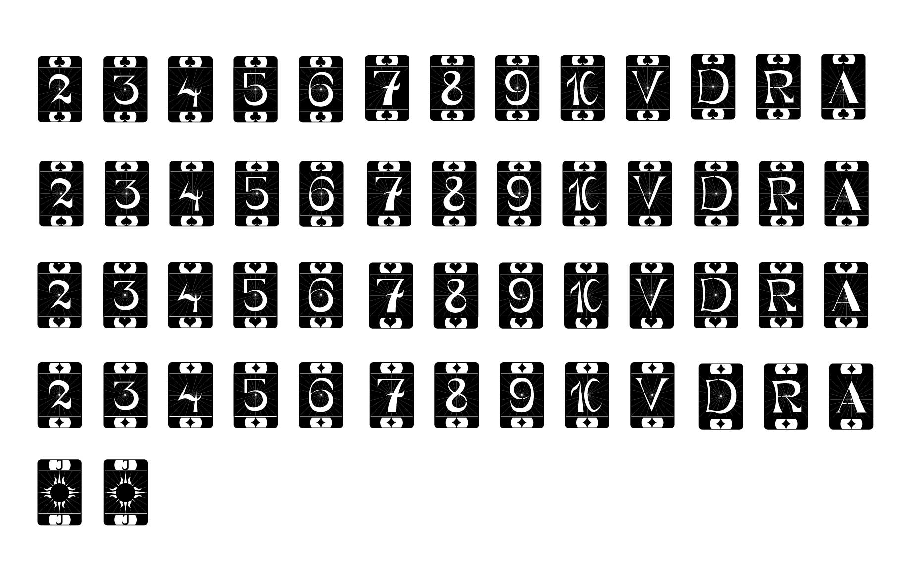
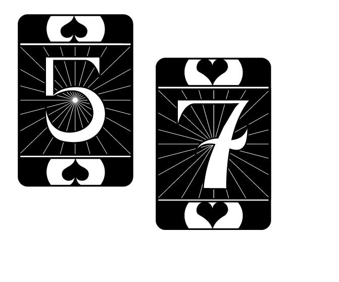
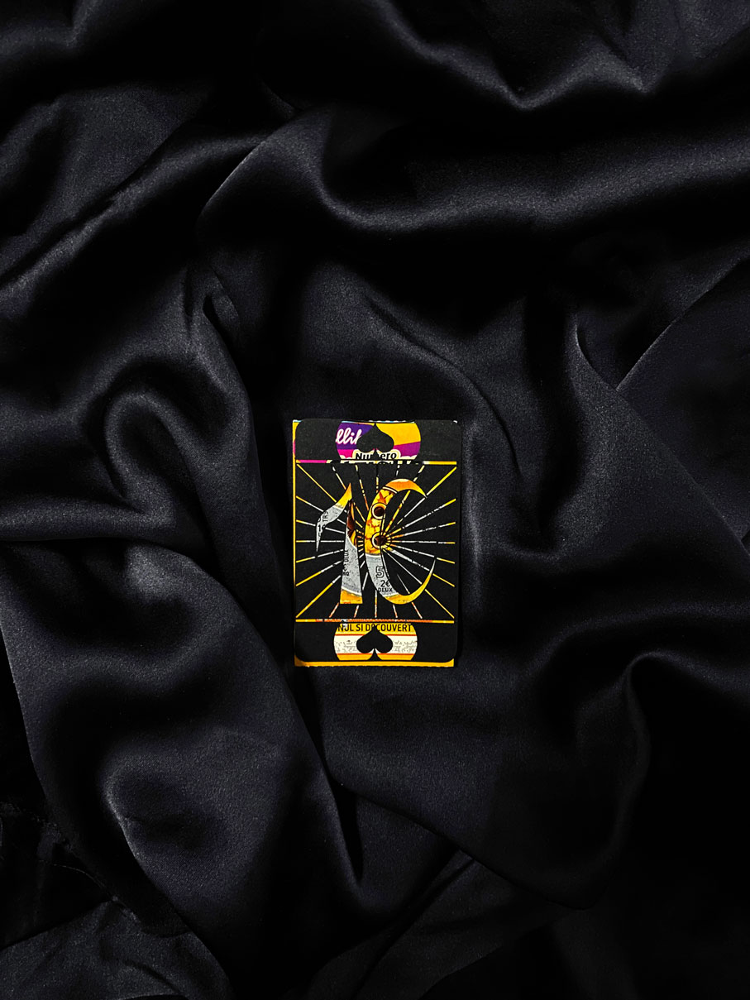
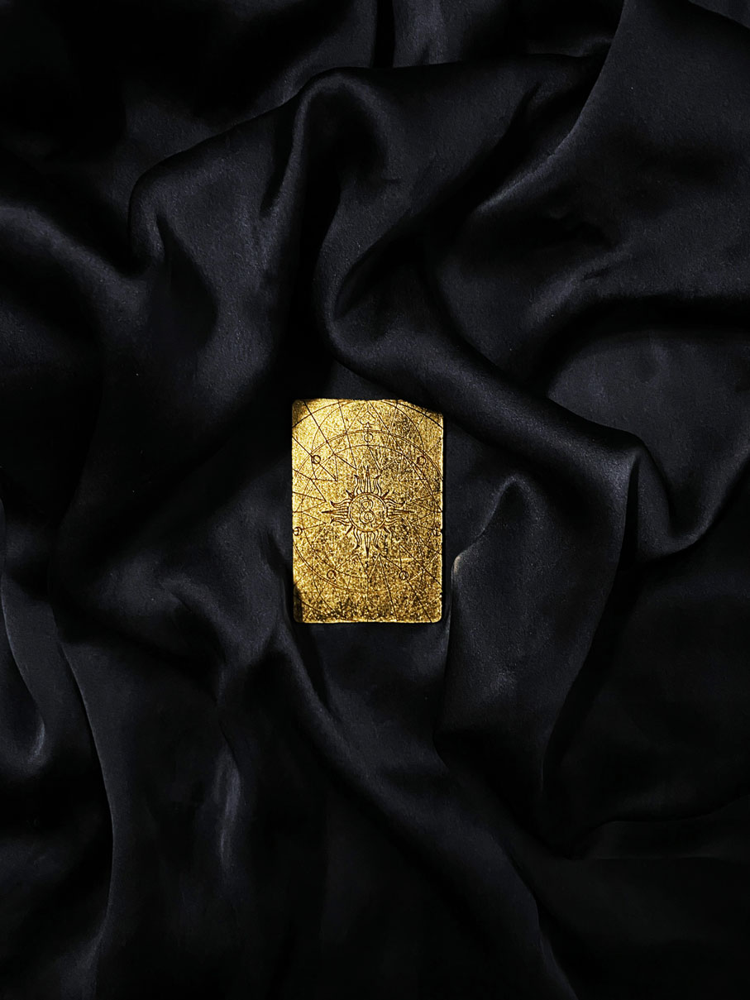

EN
A 52-cards set for a 52 weeks long game.
”Comète” prints a new set of playing cards on lost scratch tickets, initially destined to trash. The concept here is to resuscitate hope and joy of playing by recycling waste. The rules are based on a reversed-tombola : everyweek a card will be eliminated from the 52 set and the goal is to have in possession the 52th drawn card on the last week of the year.
Every winner will receive his/her winning card turned into gold. They have the choice of changing it into money, or keep it and wait for gold’s value or this card’s value to increase.
Comète push the gamers to think twice before throw their lost ticket away.
Comète 2021
FR
Un jeu de 52 cartes pour un jeu de 52 semaines.
”Comète” met en place un jeu de loterie dont les cartes sont directement imprimées sur les tickets de jeu à gratter perdants. Ces derniers destinées à la poubelle redeviennent à nouveau source d’espoir grâce à Comète. Le jeu fonctionne sous la forme d’une tombola inversée : chaque semaine, un tirage qui éliminera une carte du jeu sera effectué. Le but étant d’être en possession de la carte tirée le 52e semaine de l’année.
Chaque gagnant remporte la carte qui lui a offert la victoire, transformée en lingot d’or. Deux choix s’offrent alors à eux : transformer ce lingot d’or en argent ou le conserver.
Comète permet ainsi de pousser les joueurs à réfléchir à deux fois avant de jeter les tickets perdants.
Un jeu de 52 cartes pour un jeu de 52 semaines.
”Comète” met en place un jeu de loterie dont les cartes sont directement imprimées sur les tickets de jeu à gratter perdants. Ces derniers destinées à la poubelle redeviennent à nouveau source d’espoir grâce à Comète. Le jeu fonctionne sous la forme d’une tombola inversée : chaque semaine, un tirage qui éliminera une carte du jeu sera effectué. Le but étant d’être en possession de la carte tirée le 52e semaine de l’année.
Chaque gagnant remporte la carte qui lui a offert la victoire, transformée en lingot d’or. Deux choix s’offrent alors à eux : transformer ce lingot d’or en argent ou le conserver.
Comète permet ainsi de pousser les joueurs à réfléchir à deux fois avant de jeter les tickets perdants.






